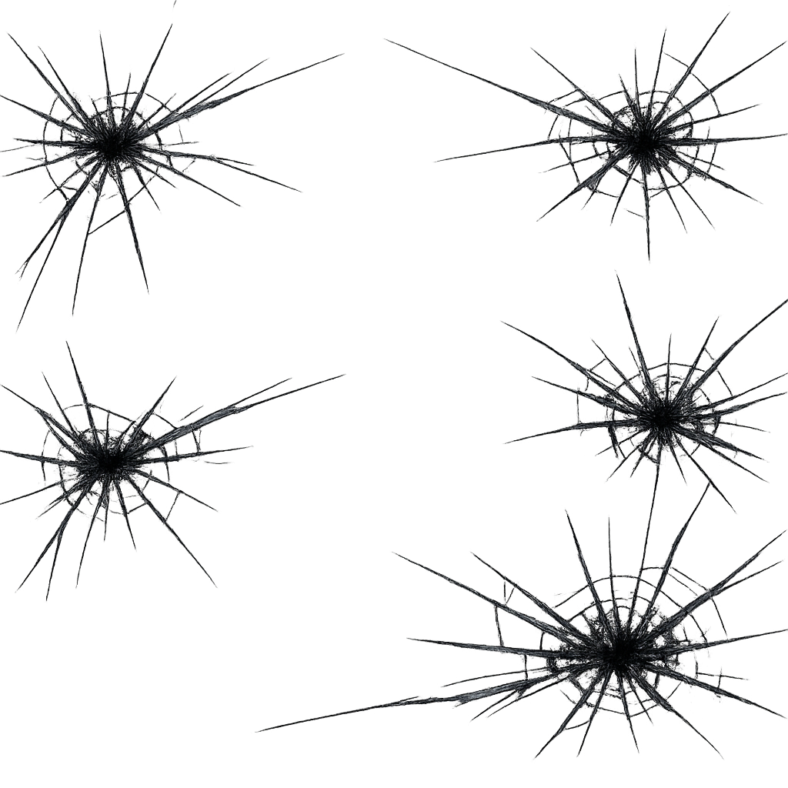

This is an unofficial fan project created by fans and is not affiliated with, endorsed by, or associated with GLITCH Productions.
Murder Drones and all related official characters, settings, and trademarks belong to GLITCH Productions and their respective creators.
Viewer discretion is advised. This project contains horror themes, unsettling imagery, flashing/glitch effects, and loud audio that may not be suitable for all audiences.

Hello, can you hear me?
The landing-pod slammed into the loamy soil of Agro-c like a meteor. Steam hissed from the scorched hull as the hatch blew open, spitting out three figures into a sea of swaying golden stalks that stretched to the horizon. The air smelled like wet earth, crushed chlorophyll, and something faintly metallic. Blood, maybe, or just old machinery rusting under the sun.
Fai stepped out first, her labcoat flapping over her battered spacesuit like a mad scientist's cape. Short black hair with jagged yellow streaks whipped across her face, black eyes gleaming with that particular brand of unhinged curiosity that made people back away slowly. She was [redacted] technically, but that didn't cover the manic energy that rolled off her.
She said, voice bright and cracking at the edges. She spread her arms wide, taking in the endless fields, the distant silhouettes of abandoned agro-domes, and the thick, overgrown forests that looked like they'd swallowed whole civilizations.
A manic little laugh bubbled out of her, the kind that started low in the throat and ended somewhere near a hyena's cackle.
Behind her, Lex climbed down more carefully. A shy boy drone was compact, soft blue optics lines that flickered nervously. He clutched a scanner like it was his blanket.
Fai spun on her heel, grinning with too many teeth for a human.
Vex didn't answer with words. She never did. The depressed girl drone dropped from the pod with a heavy metallic thud, her longer limbs and cracked purple visor giving her a permanent "done with existence" slouch. She raised one hand in a lazy thumbs-up, then immediately went back to staring at the dirt.
I don't know how long it's been...
The signal. That was the hook buried deep in Fai's ribs. It had pinged their ship two cycles ago. Her old human encryption, fragmented, but the voice signature... she knew it. She knew it the way you know the shape of a scar. Her old mentor. The man who'd taught her how to dissect, how to laugh while the universe tried to eat you. Father figure in all but name. Then he'd vanished into the black, chasing ghosts.
Now the ghost was screaming for help from a planet that looked like Earth after it decided to go full feral farm.
The three of them moved through the stalks. Fai's boots crushed glowing blue bio-robotic insects that popped like tiny fireworks. Lex kept the scanner raised, feeding data into his wrist display. Vex trailed behind, occasionally kicking over a rusted harvesting drone half-buried in the dirt. Its broken optic flickered once as she passed—then died again.
A low wind moved through the fields, carrying a sound that might have been rustling leaves or might have been something large dragging itself through the undergrowth.
Vex paused, head tilting. She made a single, slow gesture with two fingers, then gave another thumbs-up, this one slower. Almost sarcastic.
Fai laughed again, but there was an edge to it now. The kind of laugh that remembered every creepypasta she'd grown up on, every story where the rescue mission turned out to be the bait.
Pulling a cutter from her coat that definitely wasn't standard issue. Her helmet caught the sunlight like warning lights.
Behind them, the pod's emergency beacon blinked once, twice, then went dark as something in the tall stalks leaned in to listen.
A whole new world to explore